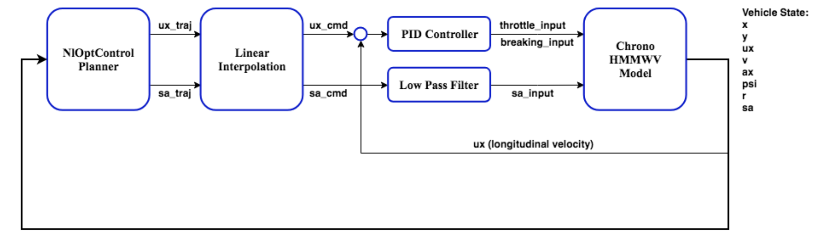

trajectory_follower
The trajectoryfollower package is to control the vehicle by directly applying the output from the `nloptcontrolplanner` package.
Inputs
Following are the arguments are required by trajectory_follower.launch package
Vehicle State
| Name | Description |
|---|---|
/state/ux | velocity in the x direction (vehicle frame) in (m/s) |
Trajectories
| Name | Description |
|---|---|
/trajectory/t | time (s) |
/trajectory/x | global x position trajectory (m) |
/trajectory/y | global y position trajectory (m) |
/trajectory/psi | global heading angle trajectory (rad) |
/trajectory/sa | steering angle trajectory at the tire (rad) |
/trajectory/ux | speed in the x direction (vehicle frame) (m/s) |
Output
The output of this package is as follows.
Vehicle State
| Name | Description |
|---|---|
/control/sa | steering angle at the tire (rad) |
/control/thr | throttle input, range: [0, 1] |
/control/brk | break input, range: [0, 1] |
Logic
The other kind of follower is trajectory follower, namely longitudinal speed and steering angle control, shown below.

The control of the chrono vehicle model utilizes the longitudinal speed and steering angle command from the planner. For longitudinal speed, it is controlled by a closed-loop PID controller which calculates the throttle and braking input into the chrono model. For steering angle, it is under open-loop control which calculates the steering input to the chrono model, where a low-pass filter is implemented to prevent the steering input from changing drastically.